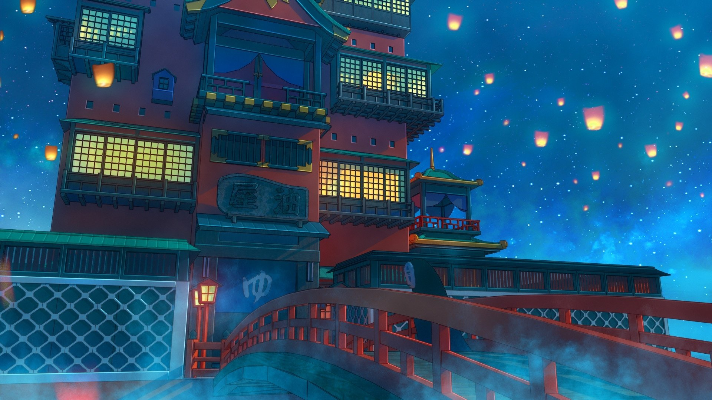

pelicula favorita
El viaje de chihiro
Chihiro es una niña caprichosa y testaruda de diez años que cree que el universo entero debe someterse a sus deseos. Cuando sus padres, Akio y Yugo, le dicen que tienen que cambiar de casa se pone furiosa y no hace nada para ocultar sus sentimientos. Cuando la familia se marcha Chihiro se agarra al ramo de flores que le han regalado sus amigos como si llevara en él todos sus recuerdos. Rumbo a su nueva casa, la familia parece equivocarse de camino y de repente se encuentran al final de un misterioso callejón sin salida. Allí se yergue un enorme edificio rojo con un interminable túnel en el centro que parece una boca gigantesca. El túnel conduce a un pueblo fantasmal donde les espera un magnífico banquete. Akio y Yugo se lanzan sobre la comida. Chihiro mira a sus padres, que siguen devorando plato tras plato, cuando de repente son transformados en cerdos. Sin querer han entrado en un mundo habitado por dioses antiguos y seres mágicos, dominado por la diabólica Yubaba, una arpía hechicera. Yubaba le explica a Chihiro que a los intrusos los transforman en animales y después los matan para comerlos. Los que consiguen escapar de este trágico destino son condenados a morir una vez que se demuestra su inutilidad.
